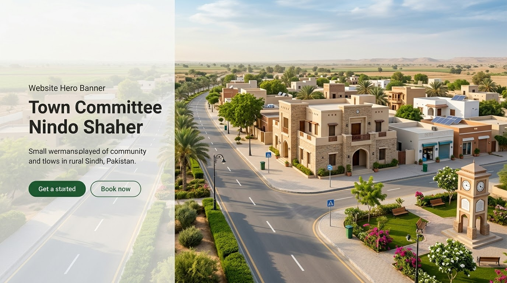

Municipal Administration
Learn about the administration and its public responsibilities.
View AdministrationSindh, Pakistan
Serving Our Community
Explore town information, municipal services, public announcements and community resources through the Town Committee Nindo Shaher website.
Explore municipal service information.
Find announcements and updates.
Explore published project information.
Find guidance for municipal concerns.
Welcome to Our Town
Town Committee Nindo Shaher is a local government body serving the community in Sindh, Pakistan. This website aims to make town information and public service resources easier to access.
Residents will be able to explore municipal information, public notices, development updates and contact details in one convenient place.
Learn More About Us
How We Serve
Find useful information about town administration, public services and community resources.
Learn about the administration and its public responsibilities.
View AdministrationFind information related to cleanliness and public surroundings.
Explore ServicesExplore published information about municipal works and development projects.
View ProjectsAccess announcements and notices published by the relevant authority.
Read NoticesView photographs of town activities, facilities and development works.
View GalleryFind contact information and guidance for municipal concerns.
Contact InformationStay Informed
Official announcements can be published here after confirmation by the relevant authority.
No verified public notices have been added yet. Please check back for official announcements.
View All NoticesVisit our contact page for available office details and information about reaching the relevant department.
Contact Information